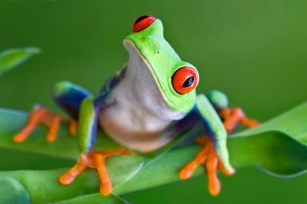

ANIMALS
slides

Recent News
9-19-2012Spiders Take Control as Birds Fade From Guam
As bird populations plummet worldwide, will Earth become the Planet of the Spiders? Researchers on Guam, a 30-mile-long U.S. island about 3,800 miles west of Hawaii, found that arachnid populations grew as much as 40-fold in the wake of entire species of insect-eating birds eaten into oblivion by invasive brown treesnakes. One biologist suspects spiders are multiplying also in other regions where birds are in decline.…read more
9-18-2012Animals Inspire New Breed of War Robots
Apart from being four-legged animals, what do a cheetah and a packmule have in common? They’ve both inspired what may be the next generation of war machines. DARPA, a military research group based in Arlington, Virginia, showed off two new robots this month, one inspired by the world’s fastest land mammal and the other based on the body plan of a familiar sturdy beast of burden.…read more
9-17-2012Venom From the Banana Spider Could Be the New Viagra
Shortness of breath, excessive salivation, tremors, and an intensely painful erection are all indications of being bitten by a highly venomous arachnid commonly known as the banana spider. So toxic is Phoneutria nigriventer, a member of the Ctenidae family of wandering spiders, that its bite has been known to kill people. The spider is a native of the rain forests of central and South America, but it has been seen scurrying out of crates of bananas shipped to other parts of the world.…read more
Chart
| Name | Location | Number of Animals |
|---|---|---|
| Saint Louis Zoological Park | St. Louis, Missouri | 19,000 |
| Arizona-Sonora Desert Museum | Tucson, Arizona | 12,370 |
| Moody Gardens | Galveston, Texas | 10,000 |
Graph

ABC animal facts
A is for aardvark Fewer than 12 aardvarks are born in captivity in North America each year.
B is for blue whale The blue whale is the loudest animal on earth.
C is for crocodile Despite their powerful tails and fierce bites, crocodiles cannot stick out their tongues—the appendages are stuck to the inside of their mouths.
D is for dalmatian Remembered best for a certain Disney film, dalmatians are the only breed of dog that suffers from gout.
E is for eel An eel, before it reaches sexual maturity, is called an elver. Elvers were once a staple in coastal dweller’s diets. Yummy.
F is for flamingo A flamingo can’t eat properly unless its head is upside down.
G is for goat Goats have rectangular pupils. This helps them to spot predators over wide, flat grazing lands.
H is for honeybee Honeybees have tiny hairs on their eyes to help them collect pollen.
I is for impala The impala, a small antelope, is capable of jumping 10 feet in the air when threatened.
Lets get started
please choose which of the following categories you would like to know more about
- Amphibians
- Birds
- Bugs
- 